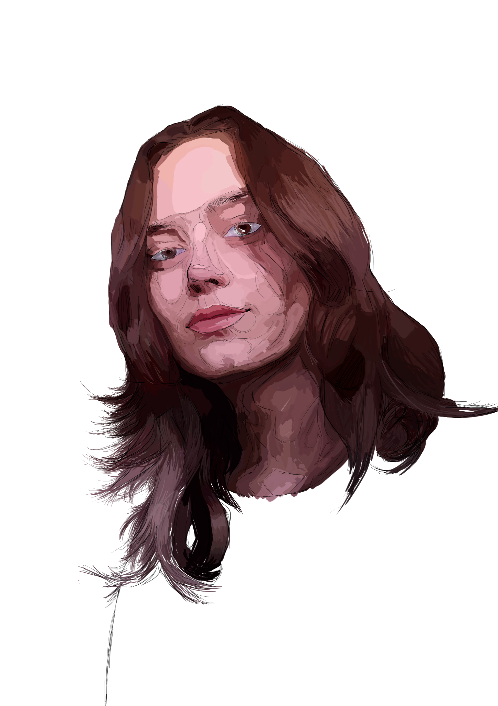

Sobre Mim

Alícia
Martins
Sou uma criadora visual. O meu trabalho cruza meios mais manuais e materiais, como a pintura a óleo, com processos digitais de ilustração, animação, composição e modelação tridimensional.
O meu percurso tem-se centrado na criação de imagens que cruzam expressão, imaginário e construção visual — explorando tanto a materialidade da pintura como as possibilidades narrativas do meio digital.
Os autorretratos digitais funcionam como elemento de apresentação e de ligação direta entre a minha identidade e o universo visual do portfólio.
Pintura
Ilustração digital
Animação
Vamos conversar
Contacto